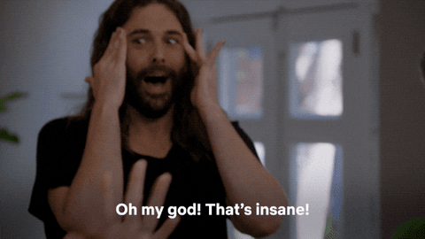
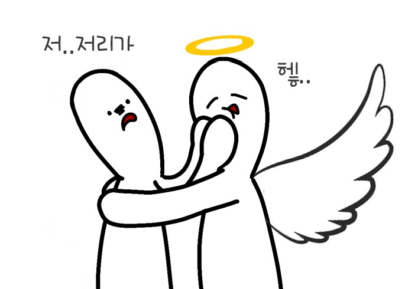
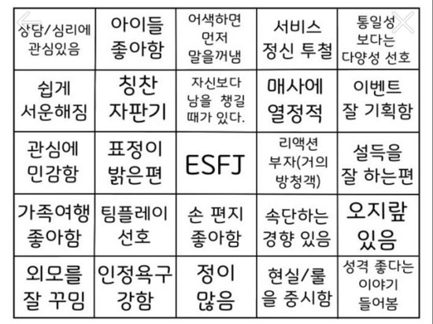

TODAY 28 | TOTAL 234918

세계의 ESFJ들아.. 여기서 정모하자!-!
https://url주소/나중에입력
ESFJ 1편: 세계 최고 주접을 떠는 리액션 왕!

바람에 낙엽이 날려가는 것만 봐도 새가 푸드덕 날아간 듯한 리액션을 합니다... 네 제가 그래요.. 예를 한 번 들어보죠!
"으아아아아앙아아ㅏ! 휴.. 놀랬다..."
ESFJ 2편: 나는 사람이라면 다 좋아~

새로운 사람 만나서 이런 저런 얘기하는 거 엄~~청 좋아합니다. 그렇다고 상황 파악도 안하고 막 다가가진 않아요! 하지만 항상 말을 먼저 거는 편이고 모두가 가지고 있을 만한 공통사 하나만 맞아도 세상 소울메이트처럼 이야기를 해댑니다.
"어머?! 너도 백신 맞았구나!!! 뭐 맞았어? 모더나는 부작용으로 탈모도 온다던데.. 혹시 모더나 맞은 건 아니쥐?! (쪼잘쪼잘)"
ESFJ 3편: ESFJ 빙고!

이건 그냥 한 번 넣어봤어요..ㅎㅎ 여러분도 한 번 도전?!
저는 24개 중에 19개에 해당하네요.. 찐 ESFJ인가봐요...^.^